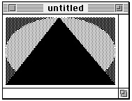

Using Pictures
To create a picture, you shouldTo open an existing picture, you should
- use the
OpenCPicturefunction to create aPicturerecord and begin defining the picture- issue QuickDraw drawing commands, which are collected in the
Picturerecord- use the
PicCommentprocedure to include picture comments in the picture definition (optional)- use the
ClosePictureprocedure to conclude the picture definitionTo draw a picture, you should use the
- use File Manager routines to get a picture stored in a
'PICT'file- use the
GetPicturefunction to get a picture stored in a'PICT'resource- use the Scrap Manager function
GetScrapto get a picture stored in the scrapDrawPictureprocedure.To save a picture, you should
To conserve memory, you can spool large pictures to and from disk storage; you should
- use File Manager routines to save the picture in a
'PICT'file- use Resource Manager routines to save the picture in a
'PICT'resource- use the Scrap Manager function
PutScrapto place the picture in the scrapTo gather information about a single picture, pixel map, or bitmap, you should
- write your own low-level procedures--using File Manager routines--that read and write temporary
'PICT'files to disk- use the
SetStdCProcsprocedure for a color graphics port (or theSetStdProcsprocedure for a basic graphics port) and replace QuickDraw's standard low-level proceduresStdGetPicandStdPutPicwith your own procedures for reading and writing temporary'PICT'files to diskTo gather information about multiple pictures, pixel maps, and bitmaps, you should
- use the
GetPictInfofunction to get information about a picture, or use theGetPixMapInfofunction to get information about a pixel map or bitmap- use the
Paletterecord or theColorTablerecord, the handles of which are returned by these functions in aPictInforecord, to examine the colors collected from the picture, pixel map, or bitmap- use the
FontSpecrecord, the handle of which is returned byGetPictInfoin aPictInforecord, to examine the fonts contained in the picture- use the
CommentSpecrecord, the handle of which is returned byGetPictInfoin aPictInforecord, to examine the picture comments contained in the picture- examine the rest of the fields of the
PictInforecord for additional information--such as pixel depth or optimal resolution--about the picture, pixel map, or bitmap- use the Memory Manager procedure
DisposeHandleto release the memory occupied by thePictInfo,FontSpec, andCommentSpecrecords; use the Palette Manager procedureDisposePaletteto release the memory occupied by aPaletterecord; and use the Color QuickDraw procedureDisposeCTableto release the memory occupied by aColorTablerecord when you are finished with the information collected by theGetPictInfofunctionWhen you are finished using a picture (such as when you close the window containing it), you should
- use the
NewPictInfofunction to begin collecting pictures, pixel maps, and bitmaps for your survey- use the
RecordPictInfofunction to add the information for a picture to your survey- use the
RecordPixMapInfofunction to add the information for a pixel map or bitmap to your survey- use the
RetrievePictInfofunction to return the collected information in aPictInforecord- use the
Paletterecord or theColorTablerecord, the handles of which are returned in thePictInforecord, to examine the colors collected from the pictures, pixel maps, and bitmaps- use the
FontSpecrecord, the handle of which is returned in thePictInforecord, to examine the fonts contained in the collected pictures- use the
CommentSpecrecord, the handle of which is returned in thePictInforecord, to examine the picture comments contained in the collected pictures- examine the rest of the fields of the
PictInforecord for additional information about the pictures, pixel maps, and bitmaps in your survey- use the
DisposePictInfofunction to dispose of the private data structures allocated by theNewPictInfofunction; use the Memory Manager procedureDisposeHandleto release the memory occupied byPictInfo,FontSpec, andCommentSpecrecords; use the Palette Manager procedureDisposePaletteto release the memory occupied by aPaletterecord; and use the Color QuickDraw procedureDisposeCTableto release the memory occupied by aColorTablerecord when you are finished with the information collected byNewPictInfoBefore using the routines described in this chapter, you must use the
- release the memory it occupies by calling the
KillPictureprocedure if the picture is not stored in a'PICT'resource- release the memory it occupies by calling the Resource Manager procedure
ReleaseResourceif the picture is stored in a'PICT'resourceInitGrafprocedure, described in the chapter "Basic QuickDraw" in this book, to initialize QuickDraw. The routines in this chapter are available on all computers running System 7--including those supporting only basic QuickDraw. To test for the existence of System 7, use theGestaltfunction with thegestaltSystemVersionselector. Test the low-order word in theresponseparameter; if the value is $0700 or greater, all of the routines in this chapter are supported.
- Note
- On computers running only basic QuickDraw, the Picture Utilities return
NILin place of handles toPaletteandColorTablerecords.Creating and Drawing Pictures
Use theOpenCPicturefunction to begin defining a picture.OpenCPicturecollects your subsequent QuickDraw drawing commands in a newPicturerecord. To complete the collection of drawing and picture comment commands that define your picture, use theClosePictureprocedure.You pass information to
- Note
- Operations with the following routines are not recorded in pictures:
CopyMask,CopyDeepMask,SeedFill,SeedCFill,CalcMask,CalcCMask, andPlotCIcon.OpenCPicturein the form of anOpenCPicParamsrecord. This record provides a simple mechanism for specifying resolutions when creating images. For example, applications that create pictures from scanned images can specify resolutions higher than 72 dpi for these pictures inOpenCPicParamsrecords.Listing 7-1 shows an application-defined routine,
MyCreateAndDrawPict, that begins creating a picture by assigning values to the fields of anOpenCPicParamsrecord. In this example, the normal screen resolution of 72 dpi is specified as the picture's resolution. You also specify a rectangle for best displaying the picture at this resolution.Listing 7-1 Creating and drawing a picture
FUNCTION MyCreateAndDrawPict(pFrame: Rect): PicHandle; CONST cHRes = $00480000; {for 72 dpi} cVRes = $00480000; {for 72 dpi} VAR myOpenCPicParams: OpenCPicParams; myPic: PicHandle; trianglePoly: PolyHandle; BEGIN WITH myOpenCPicParams DO BEGIN srcRect := pFrame; {best rectangle for displaying this picture} hRes := cHRes; {horizontal resolution} vRes := cVRes; {vertical resolution} version := - 2; {always set this field to -2} reserved1 := 0; {this field is unused} reserved2 := 0; {this field is unused} END; myPic := OpenCPicture(myOpenCPicParams); {start creating the picture} ClipRect(pFrame); {always set a valid clip region} FillRect(pFrame,dkGray); {create a dark gray rectangle for background} FillOval(pFrame,ltGray); {overlay the rectangle with a light gray oval} trianglePoly := OpenPoly; {start creating a triangle} WITH pFrame DO BEGIN MoveTo(left,bottom); LineTo((right - left) DIV 2,top); LineTo(right,bottom); LineTo(left,bottom); END; ClosePoly; {finish the triangle} PaintPoly(trianglePoly); {paint the triangle} KillPoly(trianglePoly); {dispose of the memory for the triangle} ClosePicture; {finish the picture} DrawPicture(myPic,pFrame); {draw the picture} IF QDError <> noErr THEN ; {likely error is that there is insufficient memory} MyCreateAndDrawPict := myPic; END;After assigning values to the fields of anOpenCPicParamsrecord, theMyCreateAndDrawPictroutine passes this record to theOpenCPicturefunction.The
- IMPORTANT
- Always use the
ClipRectprocedure to specify a clipping region appropriate for your picture before you callOpenCPicture. If you do not useClipRectto specify a clipping region,OpenCPictureuses the clipping region specified in the current graphics port. If the clipping region is very large (as it is when a graphics port is initialized) and you scale the picture when drawing it, the clipping region can become invalid whenDrawPicturescales the clipping region--in which case, your picture will not be drawn. On the other hand, if the graphics port specifies a small clipping region, part of your drawing may be clipped when you draw it. Setting a clipping region equal to the port rectangle of the current graphics port, as shown in Listing 7-1, always sets a valid clipping region.
MyCreateAndDrawPictroutine uses QuickDraw commands to draw a filled rectangle, a filled oval, and a black triangle. These commands are stored in thePicturerecord.The
- Note
- If there is insufficient memory to draw a picture in Color QuickDraw, the
QDErrorfunction (described in the chapter "Color QuickDraw" in this book) returns the result codenoMemForPictPlaybackErr.MyCreateAndDrawPictroutine concludes the picture definition by using theClosePictureprocedure. By passing to theDrawPictureprocedure the handle to the newly defined picture,MyCreateAndDrawPictreplays in the current graphics port the drawing commands stored in thePicturerecord. Figure 7-3 shows the resulting figure.
- Note
- After using
DrawPictureto draw a picture, your application can use the Window Manager procedureSetWindowPicto save a handle to the picture in the window record. When the window's content region must be updated, the Window Manager draws this picture, or only a part of it as necessary, instead of generating an update event. Another Window Manager routine, theGetWindowPicfunction, allows your application to retrieve the picture handle that you store usingSetWindowPic. When you use the Window Manager procedureDisposeWindowto close a window,DisposeWindowautomatically calls theKillPictureprocedure to release the memory allocated to a picture referenced in the window record. These routines and the window record are described in the chapter "Window Manager" in Inside Macintosh: Macintosh Toolbox Essentials.Opening and Drawing Pictures
Using File Manager routines, your application can retrieve pictures saved in'PICT'files; using theGetPicturefunction, your application can retrieve pictures saved in the resource forks of other file types; and using the Scrap Manager functionGetScrap, your application can retrieve pictures stored in the scrap.Drawing a Picture Stored in a 'PICT' File
Listing 7-2 illustrates an application-defined routine, calledMyDrawFilePicture, that uses File Manager routines to retrieve a picture saved in a'PICT'file. TheMyDrawFilePictureroutine takes a file reference number as a parameter.Listing 7-2 Opening and drawing a picture from disk
FUNCTION MyDrawFilePicture(pictFileRefNum: Integer; destRect: Rect): OSErr; CONST cPicFileHeaderSize = 512; VAR myPic: PicHandle; dataLength: LongInt; err: OSErr; BEGIN {This listing assumes the current graphics port is set.} err := GetEOF(pictFileRefNum,dataLength); {get file length} IF err = noErr THEN BEGIN err := SetFPos(pictFileRefNum,fsFromStart, cPicFileHeaderSize); {move past the 512-byte 'PICT' } { file header} dataLength := dataLength - cPicFileHeaderSize; {remove 512-byte } { 'PICT' file header from file length} myPic := PicHandle(NewHandle(dataLength)); {allocate picture handle} IF (err = noErr) & (myPic <> NIL) THEN BEGIN HLock(Handle(myPic)); {lock picture handle before using FSRead} err := FSRead(pictFileRefNum,dataLength,Ptr(myPic^)); {read file} HUnlock(Handle(myPic)); {unlock picture handle after using FSRead} MyAdjustDestRect(myPic,destRect); {see Listing 7-7 on page 7-18} DrawPicture(myPic,destRect); IF QDError <> noErr THEN ; {likely error is that there is insufficient memory} KillPicture(myPic); END; END; MyDrawFilePicture := err; END;In code not shown in Listing 7-2, this application uses the File Manager procedureStandardGetFileto display a dialog box that asks the user for the name of a'PICT'file; using the file system specification record returned byStandardGetFile, the application calls the File Manager functionFSpOpenDFto return a file reference number for the file. The application then passes this file reference number toMyDrawFilePicture.Because every
'PICT'file contains a 512-byte header for application-specific use,MyDrawFilePictureuses the File Manager functionSetFPosto skip past this header information. TheMyDrawFilePicturefunction then uses the File Manager functionFSReadto read the file's remaining bytes--those of thePicturerecord--into memory.The
MyDrawFilePicturefunction creates a handle for the buffer into which thePicturerecord is read. Passing this handle to theDrawPictureprocedure,MyDrawFilePictureis able to replay onscreen the commands stored in thePicturerecord.For large
'PICT'files, it is useful to spool the picture data from disk as necessary instead of reading all of it directly into memory. In low-memory conditions, for example, your application might find it useful to create a temporary file on disk for storing drawing instructions; your application can read this information as necessary. The application-defined routineMyReplaceGetPicshown in Listing 7-3 replaces thegetPicProcfield of the current graphics port'sCQDProcsrecord with an application-defined low-level routine, calledMyFileGetPic. While QuickDraw's standardStdGetPicprocedure reads picture data from memory,MyFileGetPicreads the picture data from disk. (Listing 7-10 on page 7-21 shows how to replace QuickDraw's standardStdPutPicprocedure with one that writes data to a file so that your application can spool a large picture to disk.)Listing 7-3 Replacing QuickDraw's standard low-level picture-reading routine
FUNCTION MyReplaceGetPic: QDProcsPtr; VAR currPort: GrafPtr; customProcs: QDProcs; customCProcs: CQDProcs; savedProcs: QDProcsPtr; BEGIN GetPort(currPort); savedProcs := currPort^.grafProcs; {save current CQDProcs } { or QDProcs record} IF MyIsColorPort(currPort) THEN {this is a color graphics port} BEGIN SetStdCProcs(customCProcs); {create new CQDProcs record containing } { standard Color QuickDraw low-level } { routines} customCProcs.getPicProc := @MyFileGetPic; {replace StdGetPic with } { address of custom } { low-level routine } { shown in Listing 7-5} currPort^.grafProcs := @customCProcs; {replace current CQDProcs } { record} END ELSE BEGIN {this is a basic graphics port} SetStdProcs(customProcs); {create new QDProcs record containing } { standard basic QuickDraw low-level } { routines} customProcs.getPicProc := @MyFileGetPic; {replace StdGetPic with } { address of custom } { low-level routine } { shown in Listing 7-5} currPort^.grafProcs := @customProcs; {replace current QDProcs record} END; MyReplaceGetPic := savedProcs; END;Listing 7-4 shows the application-defined procedureMyIsColorPort, whichMyReplaceGetPiccalls to determine whether to replace the low-level picture-reading routine for a color graphics port or a basic graphics port.Listing 7-4 Determining whether a graphics port is color or basic
FUNCTION MyIsColorPort(aPort: GrafPtr): Boolean; BEGIN MyIsColorPort := (aPort^.portBits.rowBytes < 0) END;Listing 7-5 shows the application-defined procedureMyFileGetPic, which uses the File Manager functionFSReadto read the file with the file reference number assigned to the application-defined global variablegPictFileRefNum.Listing 7-5 A custom low-level procedure for spooling a picture from disk
PROCEDURE MyFileGetPic (dataPtr: Ptr; byteCount: Integer); VAR longCount: LongInt; myErr: OSErr; BEGIN longCount := byteCount; myErr := FSRead(gPictFileRefNum, longCount, dataPtr); END;Your application does not keep track of whereFSReadstops or resumes reading a file. After reading a portion of a file,FSReadautomatically handles where to begin reading next. See Inside Macintosh: Files for more information about usingFSReadand other File Manager routines to retrieve data stored in files.Drawing a Picture Stored in the Scrap
As described in the chapter "Scrap Manager" in Inside Macintosh: More Macintosh Toolbox, your application can use the Scrap Manager to copy and paste data within a document created by your application, among different documents created by your application, and among documents created by your application and documents created by other applications. The two standard scrap formats that all Macintosh applications should support are'PICT'and'TEXT'.Listing 7-6 illustrates the application-defined routine
MyPastePict, which retrieves a picture stored on the scrap. For example, a user may have copied to the Clipboard a picture created in another application and then pasted the picture into the application that definesMyPastePict. TheMyPastePictprocedure uses the Scrap Manager procedureGetScrapto get a handle to the data stored on the scrap;MyPastePictthen coerces this handle to one of typePicHandle, which it can pass to theDrawPictureprocedure in order to replay the drawing commands stored in the scrap.Listing 7-6 Pasting in a picture from the scrap
PROCEDURE MyPastePict(destRect: Rect); VAR myPic: PicHandle; dataLength: LongInt; dontCare: LongInt; BEGIN myPic := PicHandle(NewHandle(0)); {allocate a handle for the picture} dataLength := GetScrap(Handle(myPic),'PICT',dontCare); {get picture in scrap} IF dataLength > 0 THEN {ensure there is PICT data} BEGIN MyAdjustDestRect(myPic,destRect); {shown in Listing 7-7} DrawPicture(myPic,destRect); IF QDError <> noErr THEN ; {likely error is that there is insufficient memory} END ELSE ; {handle error for len < or = 0 here} END;Defining a Destination Rectangle
In addition to taking a handle to a picture as one parameter,DrawPicturealso expects a destination rectangle as another parameter. You should specify this destination rectangle in coordinates local to the current graphics port. TheDrawPictureprocedure shrinks or stretches the picture as necessary to make it fit into this rectangle.Listing 7-7 shows an application-defined routine called
MyAdjustDestRectthat centers the picture inside a destination rectangle, which is passed toDrawPicturewhen it's time to draw the picture. (MyAdjustDestRectfirst ensures that the picture fits inside the destination rectangle by scaling the picture if necessary.)Listing 7-7 Adjusting the destination rectangle for a picture
PROCEDURE MyAdjustDestRect(aPict: PicHandle; VAR destRect: Rect); VAR r: Rect; width, height: Integer; scale, scaleH, scaleV: Fixed; BEGIN WITH destRect DO BEGIN {determine width and height of destination rect} width := right - left; height := bottom - top; END; r := aPict^^.picFrame; {get the bounding rectangle of the picture} OffsetRect(r, - r.left, - r.top); {ensure upper-left corner is (0,0)} scale := Long2Fix(1); scaleH := FixRatio(width,r.right); {get horizontal and vertical } scaleV := FixRatio(height,r.bottom); { ratios of destination rectangle } { to bounding rectangle of picture} IF scaleH < scale THEN scale := scaleH; {if bounding rect of picture } IF scaleV < scale THEN scale := scaleV; { is greater than destination } IF scale <> Long2Fix(1) THEN { rect, get scaling factors} BEGIN {scale picture to fit inside destination rectangle} r.right := Fix2Long(FixMul(scale,Long2Fix(r.right))); r.bottom := Fix2Long(FixMul(scale,Long2Fix(r.bottom))); END; {next line centers the picture within the destination rectangle} OffsetRect(r,(width - r.right) DIV 2,(height - r.bottom) DIV 2); destRect := r; END;The application callingMyAdjustDestRectbegins defining a destination rectangle by determining a target area within a window--perhaps the entire content area of a window, or perhaps an area selected by the user within a window. The application passes this rectangle toMyAdjustDestRect.A bounding rectangle is stored in the
picFramefield of thePicturerecord for every picture. TheMyAdjustDestRectroutine uses the boundaries for the picture to determine whether the picture fits within the destination rectangle. If the picture is larger than the destination rectangle,MyAdjustDestRectscales the picture to make it fit the destination rectangle.The
MyAdjustDestRectroutine then centers the picture within the destination rectangle. Finally,MyAdjustDestRectassigns the boundary rectangle of the centered picture to be the new destination rectangle. By returning a destination rectangle whose dimensions are identical to those of the bounding rectangle for the picture,MyAdjustDestRectassures that the picture is not stretched when drawn into its window.To display a picture at a resolution other than the one at which it was created, your application should compute an appropriate destination rectangle by scaling its width and height by the following factor:
scale factor = destination resolution / source resolution
For example, if a picture was created at 300 dpi and you want to display it at 75 dpi, then your application should compute the destination rectangle width and height as 1/4 of those of the picture's bounding rectangle. Your application can use the
GetPictInfofunction (described on page 7-46) to gather information about a picture. ThePictInforecord (described on page 7-31) returned byGetPictInforeturns the picture's resolution in itshResandvResfields. ThesourceRectfield contains the bounding rectangle for displaying the image at its optimal resolution.Drawing a Picture Stored in a 'PICT' Resource
To retrieve a picture stored in a'PICT'resource, specify its resource ID to theGetPicturefunction, which returns a handle to the picture. Listing 7-8 illustrates an application-defined routine, calledMyDrawResPICT, that retrieves and draws a picture stored as a resource.Listing 7-8 Drawing a picture stored in a resource file
PROCEDURE MyDrawResPICT(destRect: Rect; resID: Integer); VAR myPic: PicHandle; BEGIN myPic := GetPicture(resID); {get the picture from the resource fork} IF myPic <> NIL THEN BEGIN MyAdjustDestRect(myPic,destRect);{see Listing 7-7 on page 7-18} DrawPicture(myPic,destRect); IF QDError <> noErr THEN ; {likely error is that there is insufficient memory} END ELSE ; {handle the error here} END;When you are finished using a picture stored as a'PICT'resource, you should use the Resource Manager procedureReleaseResourceinstead of the QuickDraw procedureKillResourceto release its memory.
- IMPORTANT
- If you retrieve a picture stored in a
'PICT'resource and pass its handle to the Window Manager procedureSetWindowPic, the Window Manager proceduresDisposeWindowandCloseWindowdo not delete it; instead, you must callReleaseResourcebefore callingDisposeWindoworCloseWindow.Saving Pictures
After creating or changing pictures, your application should allow the user to save them. To save a picture in a'PICT'file, you should use File Manager routines, such asFSpCreate,FSpOpenDF,FSWrite, andFSClose. The use of these routines is illustrated in Listing 7-9, and they are described in detail in the chapter "File Manager" in Inside Macintosh: Files. Remember that the first 512 bytes of a'PICT'file are reserved for your application's own purposes. As shown in Listing 7-9, your application should store the data (that is, thePicturerecord) after this 512-byte header.Listing 7-9 Saving a picture as a
'PICT'fileFUNCTION DoSavePICTAsCmd(picH: PicHandle): OSErr; LABEL 8,9; VAR myReply: StandardFileReply; err, ignore: OSErr; pictFileRefNum: Integer; dataLength, zeroData, count: LongInt; BEGIN {display the default Save dialog box} StandardPutFile('Save picture as:','untitled',myReply); err := noErr; {return noErr if the user cancels} IF myReply.sfGood THEN BEGIN IF NOT myReply.sfReplacing THEN {create the file if it doesn't exist} err := FSpCreate(myReply.sfFile,'WAVE','PICT',smSystemScript); IF err <> noErr THEN GOTO 9; err := FSpOpenDF(myReply.sfFile,fsRdWrPerm,pictFileRefNum); {open file} IF err <> noErr THEN GOTO 8; zeroData := 0; dataLength := 4; FOR count := 1 TO 512 DIV dataLength DO {write the PICT file header} err := FSWrite(pictFileRefNum,dataLength, @zeroData); {for this app, put 0's in header} IF err <> noErr THEN GOTO 8; dataLength := GetHandleSize(Handle(picH)); HLock(Handle(picH)); {lock picture handle before writing data} err := FSWrite(pictFileRefNum,dataLength,Ptr(picH^)); {write picture } { data to file} HUnlock(Handle(picH)); {unlock picture handle after writing data} END; 8: ignore := FSClose(pictFileRefNum); {close the file} 9: DoSavePICTAsCmd := err; END;To save a picture in a'PICT'resource, you should use Resource Manager routines, such asFSpOpenResFile(to open your application's resource fork),ChangedResource(to change an existing'PICT'resource),AddResource(to add a new'PICT'resource),WriteResource(to write the data to the resource), andCloseResFileandReleaseResource(to conclude saving the resource). These routines are described in the chapter "Resource Manager" in Inside Macintosh: More Macintosh Toolbox.To place a picture in the scrap--for example, in response to the user choosing the Copy command to copy a picture to the Clipboard--use the Scrap Manager function
PutScrap, which is described in the chapter "Scrap Manager" in Inside Macintosh: More Macintosh Toolbox.For large
'PICT'files, it is useful to spool the picture data to disk instead of writing it all directly into memory. In low-memory conditions, for example, your application might find it useful to create a temporary file on disk for storing drawing instructions; your application can read this information as necessary. The application-defined routineMyReplacePutPicshown in Listing 7-10 replaces theputPicProcfield of the current graphics port'sCQDProcsrecord with an application-defined low-level routine, calledMyFilePutPic. While QuickDraw's standardStdPutPicprocedure writes picture data to memory,MyFilePutPicwrites the picture data to disk. (Listing 7-3 on page 7-14 shows how to replace QuickDraw's standardStdGetPicprocedure with one that reads data from a spool file.)Listing 7-10 Replacing QuickDraw's standard low-level picture-writing routine
FUNCTION MyReplacePutPic: QDProcsPtr; VAR currPort: GrafPtr; customProcs: QDProcs; customCProcs: CQDProcs; savedProcs: QDProcsPtr; BEGIN GetPort(currPort); savedProcs := currPort^.grafProcs; {save QDProcs or CQDProcs record } { for current graphics port} IF MyIsColorPort(currPort) THEN {see Listing 7-4 on page 7-16} BEGIN SetStdCProcs(customCProcs); {create new CQDProcs record containing } { standard Color QuickDraw low-level } { routines} customCProcs.putPicProc := @MyFilePutPic; {replace StdPutPic with } { address of custom } { low-level routine } { shown in Listing 7-11} currPort^.grafProcs := @customCProcs; {replace current CQDProcs} END ELSE BEGIN {perform similar work for a basic graphics port} SetStdProcs(customProcs); customProcs.putPicProc := @MyFilePutPic; currPort^.grafProcs := @customProcs; END; gPictureSize := 0; {track the picture size} gSpoolPicture := PicHandle(NewHandle(0)); MyReplacePutPic := savedProcs; {return saved CQDProcs or QDProcs } { record for restoring at a later time} END;Listing 7-11 showsMyFilePutPic, which uses the File Manager functionFSWriteto write picture data to the file with the file reference number assigned to the application-defined global variablegPictFileRefNum. Your application does not keep track of whereFSWritestops or resumes writing a file. After writing a portion of a file,FSWriteautomatically handles where to begin writing next.Listing 7-11 A custom low-level routine for spooling a picture to disk
PROCEDURE MyFilePutPic (dataPtr: Ptr; byteCount: Integer); VAR dataLength: LongInt; myErr: OSErr; BEGIN dataLength := byteCount; gPictureSize := gPictureSize + byteCount; myErr := FSWrite(gPictFileRefNum, dataLength, dataPtr); IF gSpoolPicture <> NIL THEN gSpoolPicture^^.picSize := gPictureSize; END;Gathering Picture Information
You can use the Picture Utilities routines to gather extensive information about pictures and to gather color information about pixel maps. You use theGetPictInfofunction to gather information about a single picture, and you use theGetPixMapInfofunction to gather color information about a single pixel map or bitmap. Each of these functions returns color and resolution information in aPictInforecord (described on page 7-31). APictInforecord can also contain information about the drawing objects, fonts, and comments in a picture.You can also survey multiple pictures, pixel maps, and bitmaps for this information. Use the
NewPictInfofunction to begin collecting pictures, pixel maps, and bitmaps for your survey. You also useNewPictInfoto specify how you would like the color, comment, and font information for the survey returned to you.To add the information for a picture to your survey, use the
RecordPictInfofunction. To add the information for a pixel map or a bitmap to your survey, use theRecordPixMapInfofunction. TheRetrievePictInfofunction collects the information about the pictures, pixel maps, and bitmaps that you have added to your survey. TheRetrievePictInfofunction returns this information in aPictInforecord.For example, to use the ColorSync Utilities to match the colors in a single picture to an output device such as a color printer, an application might find it useful to find the
CMBeginProfilepicture comment, which marks the beginning of a color profile in aPicturerecord. (Color profiles and the ColorSync Utilities are described in Advanced Color Imaging on the Mac OS.) Listing 7-12 shows an application-defined routine, calledMyGetPICTProfileCount, that usesGetPictInfoto record comments in aCommentSpecrecord (which is described on page 7-29). TheMyGetPICTProfileCountroutine uses theCommentSpecrecord to determine whether any color profiles are included in the picture as picture comments.Listing 7-12 Looking for color profile comments in a picture
FUNCTION MyGetPICTProfileCount (hPICT: PicHandle; VAR count: Integer): OSErr; VAR err: OSErr; thePICTInfo: PictInfo; verb: Integer; colorsRequested: Integer; colorPickMethod: Integer; version: Integer; pCommentSpec: CommentSpecPtr; i: Integer; BEGIN count := 0; verb := recordComments; colorsRequested := 0; colorPickMethod := systemMethod; version := 0; err := GetPictInfo(hPICT, thePICTInfo, verb, colorsRequested, colorPickMethod, version); IF ((err = noErr) AND (thePICTInfo.commentHandle <> NIL)) THEN BEGIN pCommentSpec := thePICTInfo.commentHandle^; FOR i := 1 TO thePICTInfo.uniqueComments DO BEGIN IF (pCommentSpec^.ID = CMBeginProfile) THEN BEGIN count := pCommentSpec^.count; LEAVE; END; pCommentSpec := CommentSpecPtr(ORD4(pCommentSpec)+Sizeof(CommentSpec)); END; {clean up allocations made by GetPictInfo} DisposeHandle(Handle(thePICTInfo.commentHandle)); END; MyGetPICTProfileCount := err; END;If you want information about the colors of a picture or pixel map, you indicate to the Picture Utilities how many colors (up to 256) you want to know about, what method to use for selecting the colors, and whether you want the selected colors returned in aPaletterecord orColorTablerecord.The Picture Utilities provide two color-picking methods: one that gives you the most frequently used colors and one that gives you the widest range of colors. Each has advantages in different situations. For example, suppose the picture of a forest image contains 400 colors, of which 300 are greens, 80 are browns, and the rest are a scattering of golden sunlight effects. If you ask for the 250 most used colors, you will probably receive all greens. If you ask for a range of 250 colors, you will receive an assortment stretching from the greens and golds to the browns, including colors in between that might not actually appear in the image. You can also supply a color-picking method of your own, as described in "Application-Defined Routines" beginning on page 7-60.
Your application can then use the color information returned by the Picture Utilities in conjunction with the Palette Manager to provide the best selection of colors for displaying the picture on an 8-bit indexed device.
- IMPORTANT
- When you ask for color information about a picture, the Picture Utilities take into account only the version 2 and extended version 2 picture opcodes
RGBFgCol,RGBBkCol,BkPixPat,PnPixPat,FillPixPat, andHiliteColor(as well as pixel map or bitmap data). Each occurrence of these opcodes is treated as one pixel, regardless of the number and sizes of the objects drawn with that color. If you need an accurate set of colors from a complex picture, create an image of the picture in an offscreen graphics world and call theGetPixMapInfofunction to obtain color information about that pixel map for that graphics world.